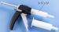

2026年
問題178 防虫・防鼠構造や防除に用いる機器に関する次の記述のうち，最も適当なものはどれか．
(1)液化炭酸ガス製剤は，有機溶媒を使用しているので，噴射器を用いて処理すると溶剤臭がする．
(2)超音波防鼠機は，ネズミが嫌がる20kHz前後の超音波を発信する機器である．
(3)ベイトガンは，シリンジに充填された薬剤を飛湖性昆虫類に向けて発射するための器具である．
(4)粘着トラップを1週間使用して防除効果を評価する場合，捕獲総数を配置トラップ数で割った捕獲指数で評価することができる．
(5)光源に高圧水銀灯を用いた場合は，白熱電球を用いた場合よりも，昆虫に対する誘引性が低いことが知られている．
2026年
問題178 正解（2） 頻出度AAA
超音波防鼠機には，19kHzを中心に±2kHzの幅で自動的に変調し，ネズミの「慣れ」を防止する製品がある．
-(1)液化炭酸ガス製剤は，有機溶媒など使用していない．フェノトリンなどのピレスロイド剤を液化炭酸ガスとともにボンべに封入した炭酸ガス製剤は，専用の噴射装置を必要とするが，粒子径が細かく，ULV的な処理が行える．
-(3)ベイトガンは狭い場所にゴキブリの毒餌を注入・スポット処理する器具である（2026-178-1図参照）．
2026-178-1図 ベイトガン

出典 ノードソン
https://www.nordson.com/ja-jp
-(4)捕獲指数（ゴキブリの場合はゴキブリ指数） \[{\rm 捕獲指数}=\frac{{\rm 捕獲数}}{{\rm 配置トラップの数}\times {\rm 処理日数}}\]
-(5) 光の色による誘引性は白熱電球を100とすると，捕虫用蛍光灯は1,300，高圧水銀灯は260，白色蛍光灯は113，高圧ナトリウム灯35，低圧ナトリウム灯4．